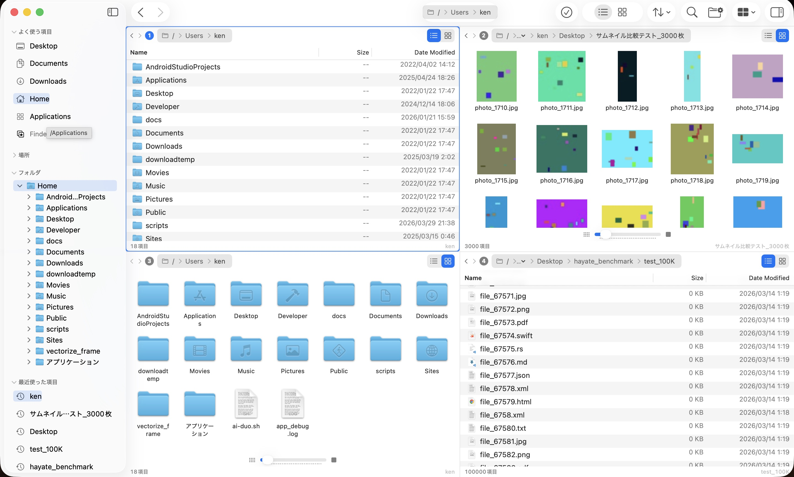
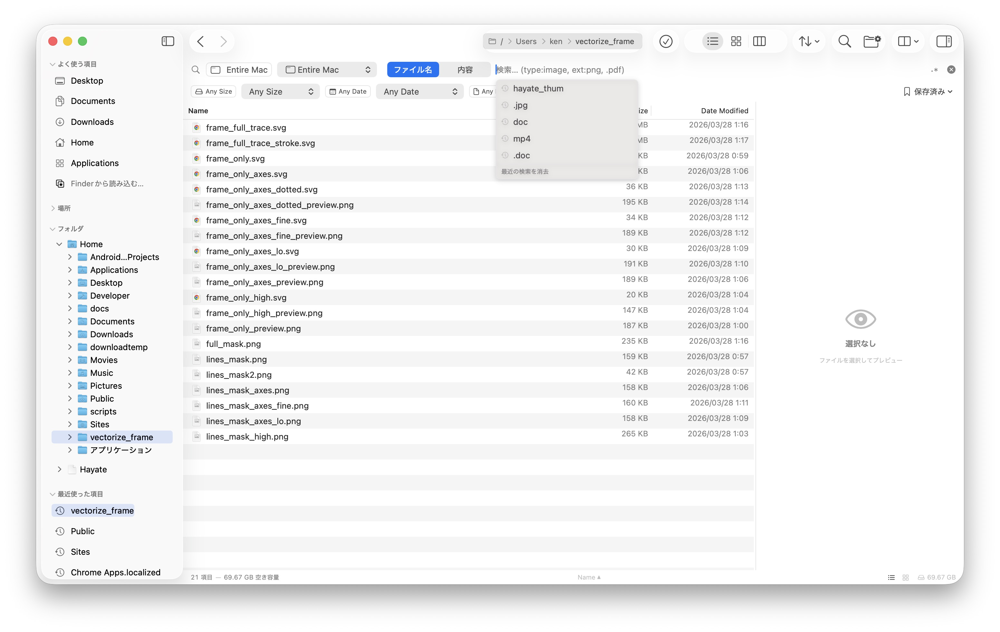
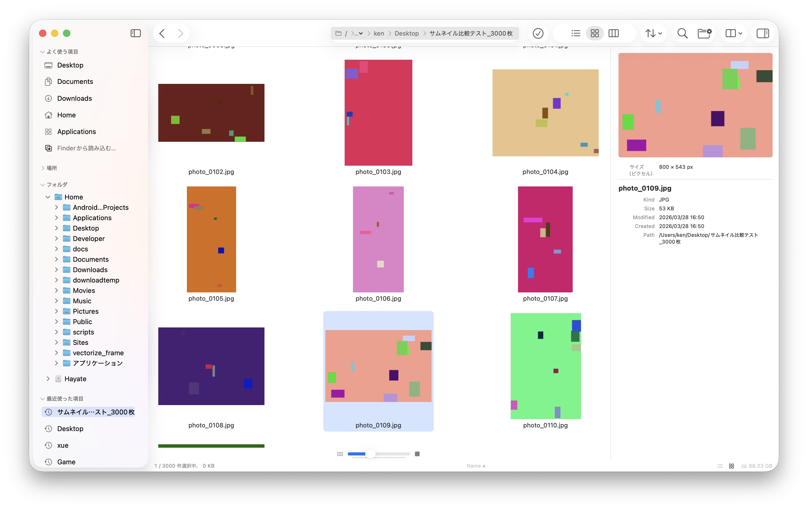
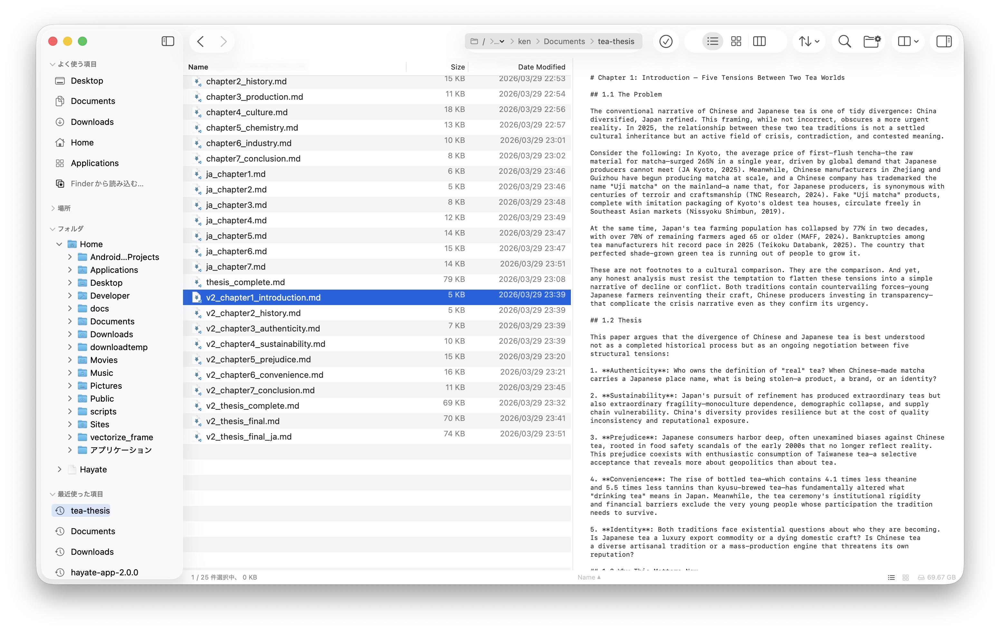

Instant thumbnails for thousands of images. Multi-pane layouts. Native macOS experience.
macOS 14+ • Apple Silicon & Intel • 15 MB download

Screenshot: 4-pane layout with thumbnails
Automated benchmarks on MacBook Air M1 (16GB). Same directory, same conditions. Hayate runs first with cold cache — the most disadvantageous order.
Time until you can scroll and select files
Resident memory while browsing directories
500K files: Finder uses 6.5x more memory. Measured on macOS 26.4, April 2026.
Built with Rust for computation and SwiftUI/AppKit for the UI. No Electron. No web views.
37 features. 13 layouts. One app.
13 layout configurations. Side-by-side, top-bottom, 2×2 grid, 1+3 splits. Switch layouts instantly with a single click. Each pane navigates independently.
Search by filename, content, type, size, and date. Saved searches, recent queries, and Smart Folders for instant access.

Screenshot: Search interfaceVisible-first parallel generation. 3,000 images load faster than competitors that render top-to-bottom. Scroll anywhere and see thumbnails immediately.

Screenshot: Gallery with 3000 thumbnailsSee modified, untracked, and staged files at a glance with per-file status badges. Branch indicator in the status bar. No extra Git GUI needed.

Screenshot: Git status badges in file listFull PTY terminal integrated right into your file manager. Always synced to the current directory. No more switching to Terminal.app.
Full Finder-compatible tag support via xattr.
Sequential, find/replace, date, case. Live preview.
Dynamic folders with predicate-based criteria.
Per-file status badges. Branch indicator.
Extend with Shell or Python scripts.
Preview video content by hovering.
Press Space to preview any file.
Keyboard-first design. All conflict-free.
A native macOS app built with Rust and SwiftUI. No Electron. No web views. Pure native performance.
Hayate is free during the beta period (until June 2026). Help us build the best file manager for macOS.
Requires macOS 14 (Sonoma) or later • Universal binary (Apple Silicon + Intel)
Development updates and releases